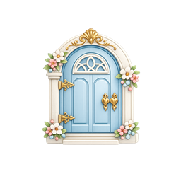
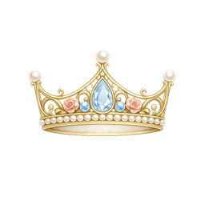
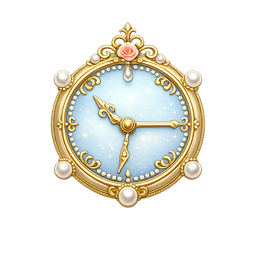
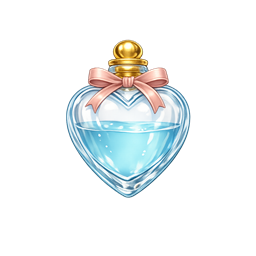
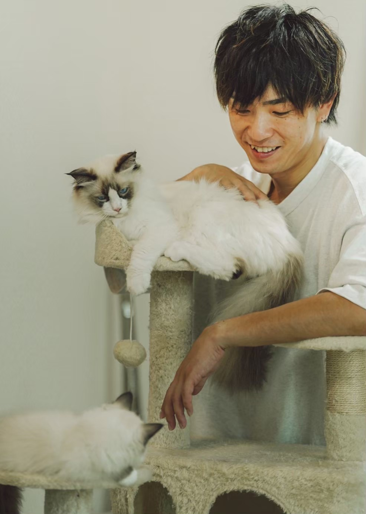
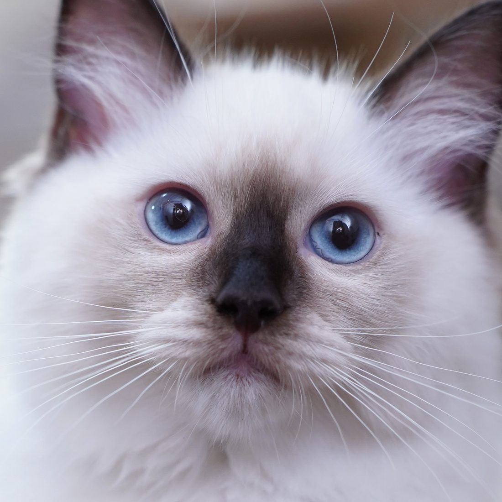
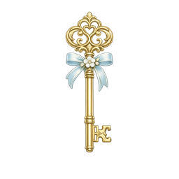
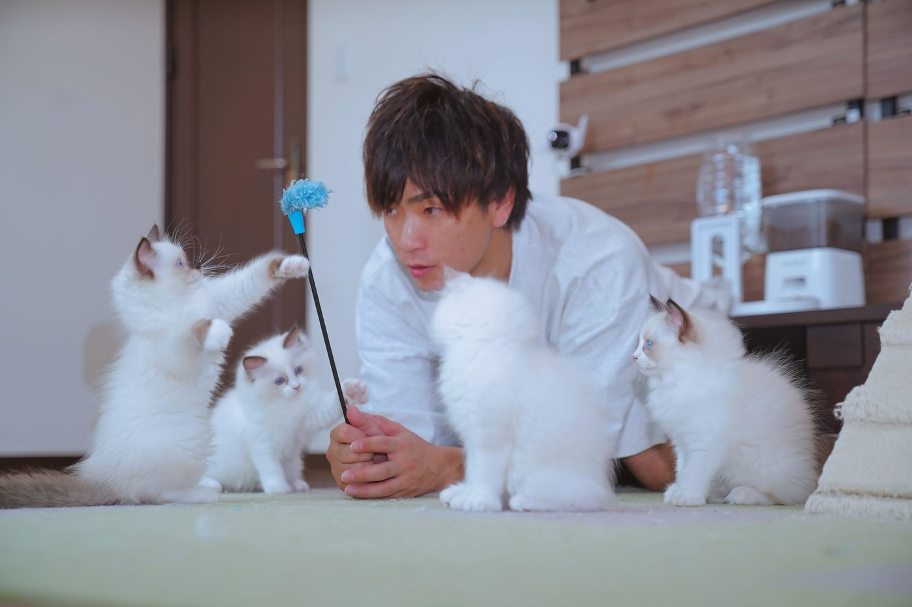

Behind the Door
扉の向こうには、Amor Aliceのいつもの暮らしがあります。
親猫たちの穏やかな姿、子猫たちの成長、そして私たちが大切にしている考え方。 ひとつひとつをご紹介しながら、ご家族との出会いへつないでいきます。
About Amor Alice
かわいいだけでなく、迎えたあとまで安心できる出会いに。
Amor Aliceでは、子猫の表情、体調、生活リズムを日々見ながら、ご家族に合うタイミングでのご案内を大切にしています。 見学は予約制で、子猫の様子やお迎え後の暮らしもゆっくり相談できます。

ラグドール専門
見学予約制
お迎え後サポート
Kittens
子猫情報
現在の子猫たちを、幼名とステータスで見やすく整理しました。価格は掲載せず、気になる子がいる場合は見学相談からゆっくりご案内します。

幼名は未定。性格が見えてきた子から、ていねいにご紹介します。
公開中のブリーダーページをもとに、直近の子猫情報を整理しています。成長やご縁の状況に合わせて、表示は随時更新していきます。
Parents
親猫たち
やさしい性格や毛色の魅力が伝わるように、親猫紹介ページも育てていきます。


Birth Reservation
次の出産を待ちたい方へ。
ご希望の毛色や性格、ご家庭のタイミングをお聞きしながら、出産予定や募集開始のご案内をしています。 子猫の体調と成長を見ながら進めるため、まずはゆっくりご相談ください。
出産や成長の状況により、ご案内の時期は前後します。ご希望に合いそうな子がいる場合に、順番にお声がけします。
-
ご希望をお聞きします
毛色、性別、暮らし方、お迎え希望時期などを無理のない範囲で伺います。
-
出産・成長を見ながらご案内
母猫と子猫の体調を優先し、性格や様子が見えてきたタイミングでお知らせします。
-
見学・相性確認へ
実際の様子を見ながら、ご家族に合う出会いになるか一緒に確認します。
Flow
お迎えまでの流れ
子猫を迎える日は、楽しみな反面、準備や体調のことなど不安も出てくると思います。 Amor Aliceでは、見学前のご相談からお迎え後の暮らしまで、ご家族に合わせて一つずつ確認しながら進めます。
-
01
ご相談・見学予約
募集状況、見学希望日、ご家族の暮らし方、先住猫・先住犬の有無などをお聞きします。
-
02
見学・相性確認
子猫の表情、遊び方、人との距離感、親猫や飼育環境を見ながら、ゆっくり相談できます。
-

03お迎え準備
ケージ、トイレ、ごはん、キャリー、お部屋の安全対策など、必要なものを一緒に確認します。
-
04
ご契約・お引き渡し
健康状態、契約内容、対面説明を確認し、当日のごはんや生活リズムもお伝えします。
-
05
お迎え後フォロー
食事、トイレ、体調の変化、慣れ方など、暮らし始めてからの不安も必要に応じて相談できます。

Daily Care
日々の小さな変化を見逃さずに。
食欲、トイレ、表情、遊び方。写真だけでは見えないサインまで見ながら、ご家族へつなぎます。
Q&A
よくある質問
準備からお迎え後まで、よく不安になりやすいところをサポートブックの内容に合わせて整理しました。
迷ったら、見学前でも相談ください。
ご家庭ごとに暮らし方は違うので、必要な準備や慣らし方も一緒に考えていきます。
見学だけでも相談できますか？
はい。子猫の体調と予定を確認しながら、予約制でご案内します。気になる子がいる場合も、まずは雰囲気や暮らし方の相談からで大丈夫です。
お迎え前に何を用意すればいいですか？
ケージ、トイレ、フードと食器、給水器、爪とぎ、キャリーを中心に準備します。お部屋のコードや小物、誤飲しやすいものも事前に整えておくと安心です。
お迎え直後はどう過ごせばいいですか？
最初の数日は、静かな場所で食事・水・トイレの様子を見守ります。無理に触りすぎず、子猫が自分のペースで慣れられる時間を作ります。
先住猫・先住犬がいる場合は？
いきなり対面させず、においの交換や短い対面から少しずつ進めます。どちらかが強く緊張しているときは、距離を戻して様子を見ます。
ごはんの切り替えはどうしたらいいですか？
お迎え直後は慣れたごはんを基本にし、切り替える場合は少しずつ混ぜながら進めます。食欲が落ちる、便がゆるいなど気になる変化があれば早めにご相談ください。
トイレは覚えていますか？
基本的には覚えています。猫は砂を掘って排泄する習性があるため、その習性を人が理解し、トイレだと認識しやすい場所・砂・落ち着ける環境を整えることが大切です。お迎え時には、自分のおしっこの匂いがついた猫砂もお渡ししています。
体調で気をつけるサインはありますか？
食欲、排泄、呼吸、目や鼻の様子、元気の有無は毎日見ておきたいポイントです。明らかな異変や迷う症状がある場合は、動物病院への相談も含めて早めに動きましょう。
お手入れや災害対策も必要ですか？
ブラッシング、爪切り、耳や目のチェックは少しずつ慣らしていきます。キャリー、避難用品、脱走対策も、普段から準備しておくと安心です。
Contact
見学予約・出産予約・募集状況のご相談
気になる子猫、出産予約、見学希望日、猫を迎えるうえで不安なことをお知らせください。 ご家族に合う出会いになるよう、ていねいにお返事します。